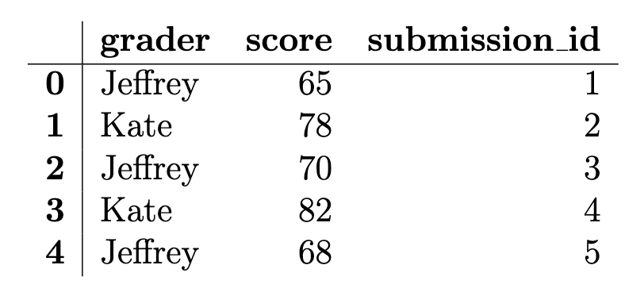

← return to practice.dsc10.com
This quiz was administered in-person. Students were allowed a
double-sided sheet of handwritten notes. Students had 30
minutes to work on the quiz.
This quiz covered Lectures
17-21 of the Winter 2026 offering
of DSC 10.
Note (groupby / pandas 2.0): Pandas 2.0+ no longer
silently drops columns that can’t be aggregated after a
groupby, so code written for older pandas may behave
differently or raise errors. In these practice materials we use
.get() to select the column(s) we want after
.groupby(...).mean() (or other aggregations) so that our
solutions run on current pandas. On real exams you will not be penalized
for omitting .get() when the old behavior would have
produced the same answer.
We are using (fictional) grading data from Quiz 3. Jeffrey and Kate
each graded a random sample of DSC 10 submissions. The
grading DataFrame has one row per graded submission with 50
rows total (25 per grader). The columns are: "grader" (str,
either "Jeffrey" or "Kate"),
"score" (int, score between 0 and 100), and
"submission_id" (int, unique ID). The first few rows of
grading are shown below.

After examining the difficulty of the last DSC 10 quiz, expert detective and professor Peter has deduced that one of the two graders has been grading significantly harsher than the other.
Using his years of statistical skill and investigative prowess, Detective Peter decides to conduct a permutation test to determine whether one of the two graders was significantly harsher than the other. He has Jeffrey’s scores and Kate’s scores and no assumed knowledge of the population distribution of scores. Which of the following best explains both why a permutation test is appropriate here and how it should be done?
We have two samples and want to test whether they came from the same distribution. Under the null hypothesis, we simulate by shuffling the group labels, since if the distributions are the same the labels shouldn’t matter.
We have two samples and want to test whether they came from the same distribution. Under the null hypothesis, we simulate by resampling with replacement from the combined 50 scores to form two new groups.
We want to compare Jeffrey’s scores against a known population distribution of Quiz 3 scores. Under the null hypothesis, we simulate by shuffling scores and recomputing the test statistic.
Shuffling the grader labels generates two new random samples from the population of all possible Quiz 3 scores, letting us estimate the sampling distribution of the test statistic.
Answer: We have two samples and want to test whether they came from the same distribution. Under the null hypothesis, we simulate by shuffling the group labels, since if the distributions are the same the labels shouldn’t matter.
A permutation test is appropriate when we want to compare two samples
and the null hypothesis is that they come from the same distribution
(labels are arbitrary). We simulate under the null by randomly permuting
which scores are assigned to which grader — i.e., shuffling the
grader labels — and recomputing the test statistic each
time. Resampling with replacement from the pooled data would be
bootstrap-style, not the usual permutation scheme for this setup.
The average score on this problem was 83%.
Detective Peter moves forward with his permutation test to compare Jeffrey’s and Kate’s scores. He suspects that Jeffrey is the harsher grader — that is, Jeffrey’s scores tend to be lower than Kate’s, and wants to determine if there is evidence to support this.
Which null and alternative hypothesis pair is most appropriate?
Null: Jeffrey and Kate gave scores from the same distribution. Alt: Jeffrey gave scores from a distribution with a smaller mean than Kate’s.
Null: Jeffrey’s scores come from a known population with mean 70. Alt: Jeffrey’s scores do not come from a population with mean 70.
Null: Jeffrey and Kate gave scores from the same distribution. Alt: The distribution of Jeffrey’s scores is entirely lower than the distribution of Kate’s scores.
Null: The mean score from Jeffrey equals the mean score from Kate. Alt: The mean score from Jeffrey does not equal the mean score from Kate.
Answer: Null: Jeffrey and Kate gave scores from the same distribution. Alt: Jeffrey gave scores from a distribution with a smaller mean than Kate’s.
We want a one-sided alternative that Jeffrey is harsher (lower mean). The permutation test framework compares whether the two samples could have come from the same distribution (null); the alternative should encode “Jeffrey’s distribution has a smaller mean than Kate’s,” not a two-sided difference in means only, and not that every Jeffrey score is below every Kate score.
The average score on this problem was 66%.
For testing whether Jeffrey is the harsher grader, which of the following could be used as a test statistic to get a p-value directly from its empirical distribution under the null hypothesis? Select all that are correct.
The difference in group means: Kate’s mean minus Jeffrey’s mean.
The difference in group means: Jeffrey’s mean minus Kate’s mean.
The absolute difference between the two groups’ mean scores.
The total variation distance between the two graders’ score distributions.
None of the above.
Answer: The difference in group means: Kate’s mean minus Jeffrey’s mean; The difference in group means: Jeffrey’s mean minus Kate’s mean.
Either signed difference in means is a valid test statistic: under the null (same distribution), permuting labels gives an empirical null distribution for that statistic, and the p-value is computed from how extreme the observed value is. One-sided conclusions depend on which sign you use and how you define “as extreme.” The absolute difference corresponds to a two-sided comparison of means. TVD could compare distributions but is not required here; the problem asks which could be used — the two mean differences are standard choices.
The average score on this problem was 75%.
Detective Peter asks another staff member, Ray, to write code to run
the permutation test with 10,000 permutations. Ray comes up with his own
test statistic and writes the following code to calculate an observed
statistic, stored in observed_stat. Ray also wrote code
(not shown) to store 10,000 simulated test statistics, each calculated
in a manner matching the code for the observed statistic, in the array
called simulated_stats. Fill in the two blanks below so it
correctly computes the p-value for testing whether Jeffrey is the
harsher grader.
observed_stat = (abs(grading[grading.get('grader') == 'Kate']
.get('score').mean())
- abs(grading[grading.get('grader') == 'Jeffrey']
.get('score').mean()))
p_value = (simulated_stats ___(a)___ observed_stat).sum() / ___(b)___(a)
Answer: >=
The p-value is the proportion of simulated statistics that are at
least as extreme as the observed statistic in the direction consistent
with Ray’s definition of the statistic. With this setup, larger values
correspond to more extreme outcomes in one tail, so we count simulations
with simulated_stats >= observed_stat.
The average score on this problem was 50%.
(b)
Answer: len(simulated_stats)
(equivalently 10000)
The numerator counts how many simulated statistics meet the inequality; dividing by the number of simulations gives the empirical p-value.
The average score on this problem was 79%.
After finding out through his expertly constructed permutation test that Jeffrey did, in fact, grade significantly harder than Kate, Detective Peter resolves to estimate the proportion of Jeffrey’s graded submissions that received a score below 70. He will construct a 95% CLT-based confidence interval for this proportion.
(a) He wants the confidence interval to have width at most 0.08. What is the minimum number of Jeffrey’s submissions he needs?
Answer: 625
For a 95% CLT-based interval for a proportion, use \hat{p}=0.5 (conservative). Requiring width at most 0.08 leads to minimum n = 625.
The average score on this problem was 53%.
(b) Suppose he instead wants the width to be at most 0.04. The minimum sample size for that width is how many times the minimum sample size from part (a)?
Answer: 4
CI width scales like 1/\sqrt{n}, so halving the width requires multiplying n by 2^2 = 4. Thus the new minimum sample size is 4 times the minimum from part (a).
The average score on this problem was 82%.
Jeffrey frantically defends himself by claiming that the true proportion of his submissions that scored below 70 is really 0.20 — not nearly as bad as it looks! To test his claim, Detective Peter constructs a 95% confidence interval and gets [0.14, 0.40].
Using this confidence interval, at the 5% significance level, what decision should we make with respect to Jeffrey’s claim? Select all that are correct.
Reject
Fail to reject
Accept
Not enough information
Answer: Fail to reject
The value 0.20 under the null (Jeffrey’s claimed proportion) lies inside the 95% confidence interval, so the data are not inconsistent with that proportion at the 5% level — we do not reject Jeffrey’s claim. We do not “accept” the null in the formal hypothesis-testing sense; “fail to reject” is the appropriate language.
The average score on this problem was 64%.
Which of the following best explains why we reach that conclusion?
Because 0.20 lies inside the confidence interval, the data are consistent with Jeffrey’s claim.
Because 0.20 lies inside the confidence interval, the data are inconsistent with Jeffrey’s claim.
Because the interval has a width of 0.26 which is much wider than we wanted, we do not have enough precision to reject any claim at the 5% significance level.
Because the midpoint of the interval is 0.27, we have evidence against Jeffrey’s claim.
Answer: Because 0.20 lies inside the confidence interval, the data are consistent with Jeffrey’s claim.
If 0.20 is a plausible value for the parameter (it lies in the 95% CI), we do not have evidence to reject Jeffrey’s claim that the proportion is 0.20. The width or midpoint alone does not drive that conclusion.
The average score on this problem was 61%.
Overall, Detective Peter determined that Jeffrey’s offenses are grave enough: Peter travels all the way back to Tutorlandia to consult the great council of tutors on what Jeffrey’s penance should be. It was decided that Jeffrey must explain to the class what the total variation distance (TVD) measures. Which of the following is a correct description of the TVD?
The difference between two group means.
A measure of how different two distributions (of any type) are.
A measure of how different two numeric distributions are.
A measure of how different two categorical distributions are.
The proportion of simulated statistics that are at least as extreme as the observed value.
The width of a 95% confidence interval.
Answer: A measure of how different two categorical distributions are.
TVD compares two distributions on a finite set of categories by summing half the absolute differences of the proportions in each category. It is defined for categorical data, not as a general measure for arbitrary numeric distributions.
The average score on this problem was 66%.